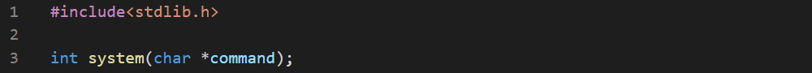

A process is a running code. The process may end voluntarily or forcibly by OS when it tries to mess up.
A running process has:
1. An unique identifier named PID.
2. A code segment - a part of memory used to store process's code and executed.
3. A data segment - a part of memory used to store process's data.
4. A context -set of all the data needed to suspend and resume the process.
A parent process starts a child process.
The system() function creates a child process and executes the command passed as an argument. The command may be an actual command from OS's shell or the name of an external program to launch and execute.

When a child process is working, the parent is put to sleep until child ends. NULL as an argument checks if it can open a shell.
If the command is NULL, the function returns zero if there's no shell availabe or non-zero otherwise.
If the command is not NULL, it returns -1 if the child process can't start or the return code of the child process.
N.B: In Unix the return code is in the higher eight bits of the result and others contain the termination reason code. You can use the following code to get it:

We write a simple program


The environment variable is couple of strings in a process's memory which are used to store some global configuration data which should be accessible to all working processed like, path variable. Every process has its own copy of the environment and it's child inherits them from it. A process can change its environment but it will be visible only to him and his children.
The "C" language allows you to three different forms of main() :

Let's see how many environment variables are there:


There's another function which gets a single environment variable. The result is NULL if there is no variable ofthat name. And a pointer to the variable's value otherwise.

Now let's check the user of the pc using getenv()


The setenv() function sets environment variables and unsetenv() removes environment variables. The third parameter of setenv() asks if you want to overwrite any existing value.

Let's try them:


The Windows version of the function is putenv(). It can be invoked in two forms:
1. NAME=VAL which sets VAL to NAME
2. NAME= which removes NAME